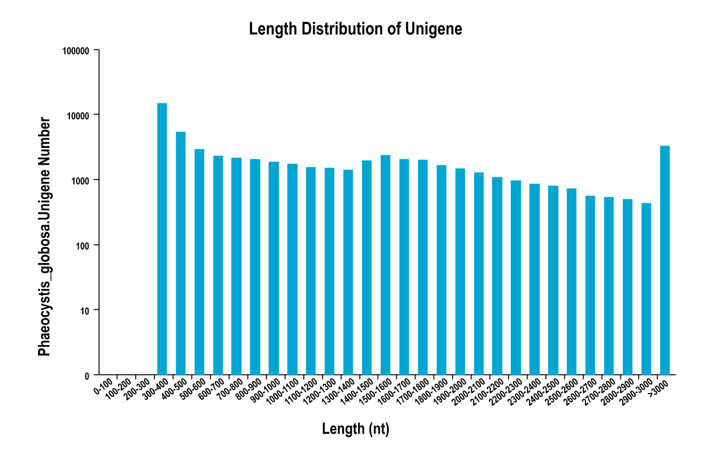
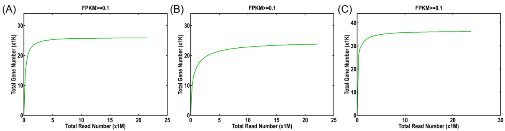
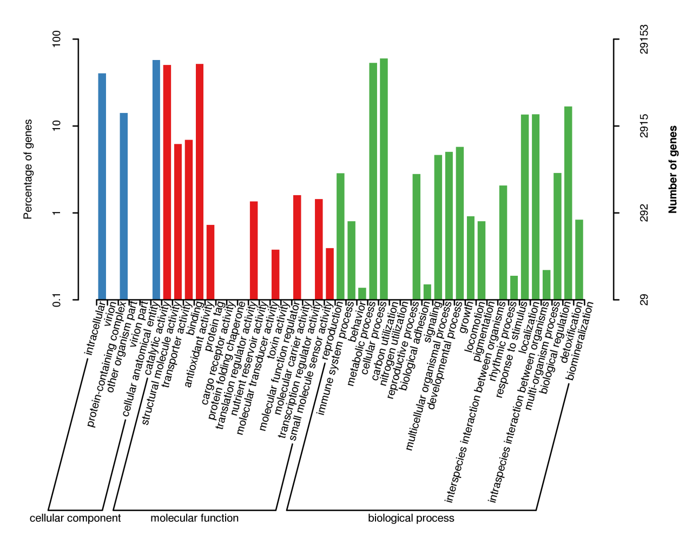
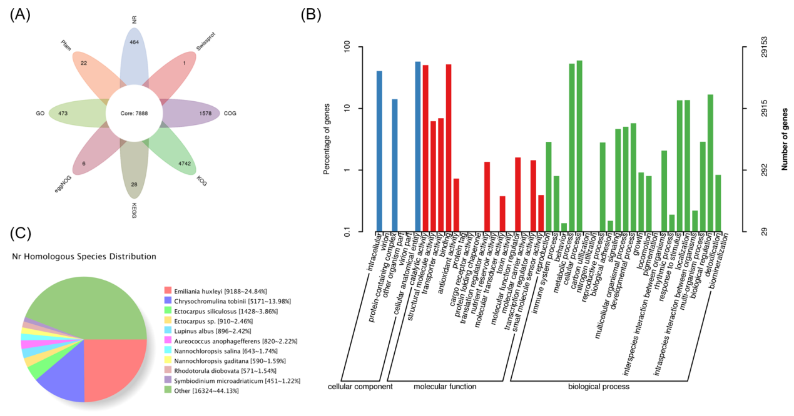
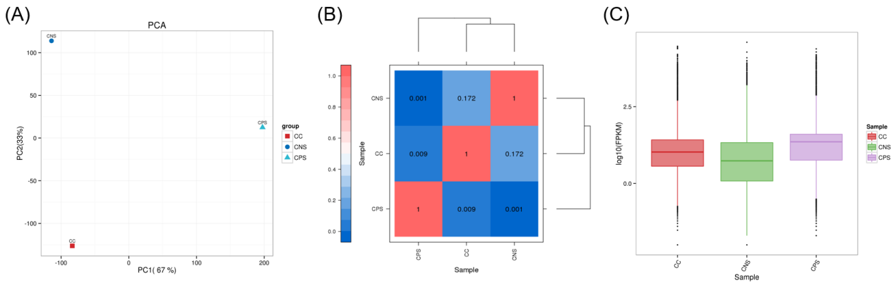
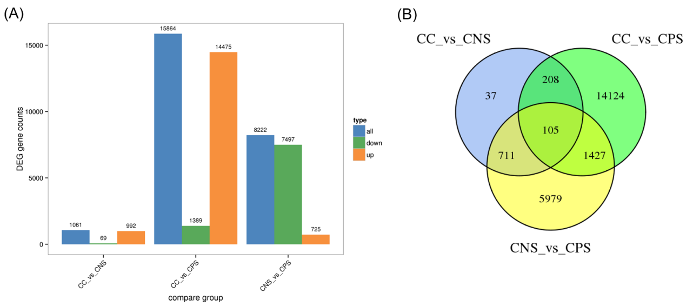
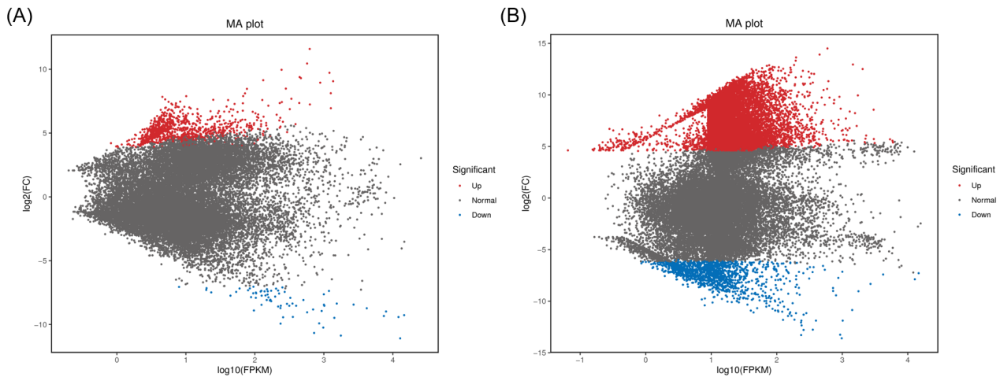
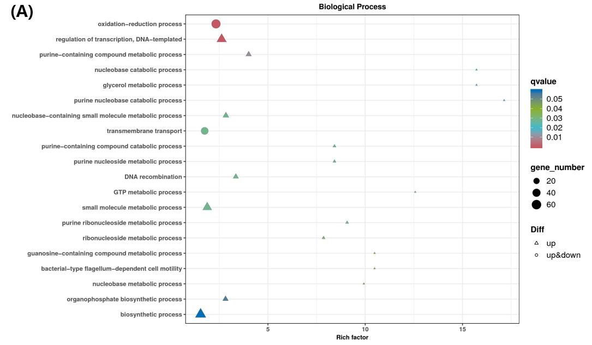
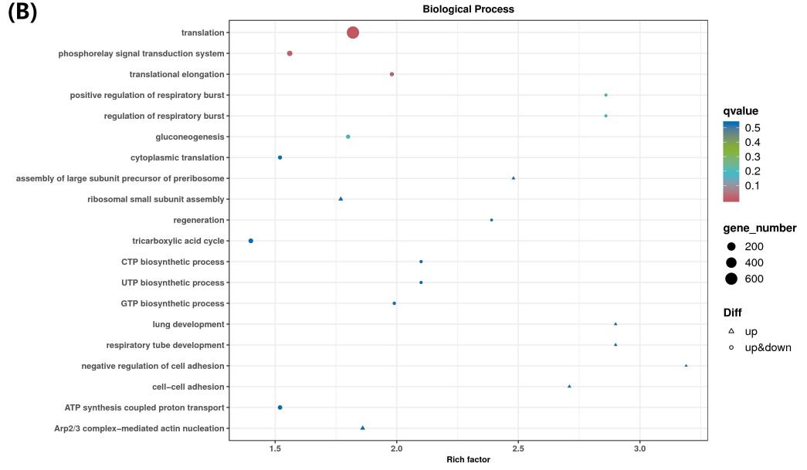
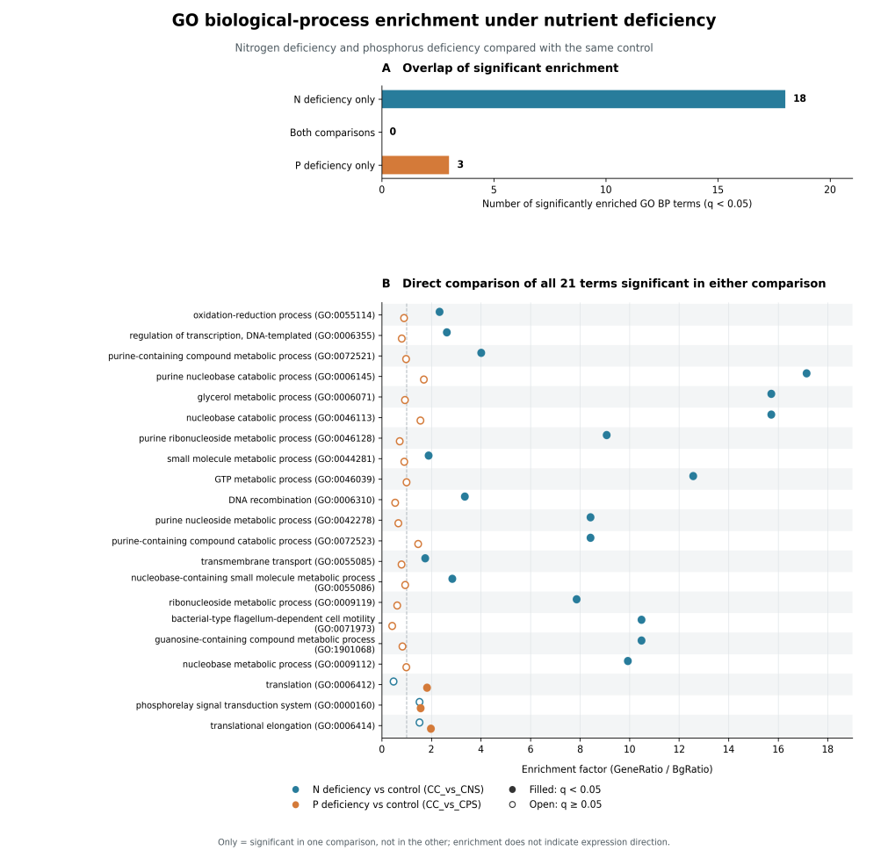

Abstract: Phaeocystis globosa is a typical harmful algal species in China's coastal waters. Nitrogen and phosphorus nutrients are the key environmental factors regulating its population proliferation. To elucidate the molecular regulatory mechanisms of P. globosa in response to nitrogen and phosphorus deficiency stress, this study set up a control group (CC), a nitrogen deficiency group (CNS), and a phosphorus deficiency group (CPS). Illumina high-throughput transcriptome sequencing was used for analysis. Quality control of sequencing showed that the sequencing quality of the three groups was good, and functional annotations were completed in 8 public databases such as NR, Swiss Prot, GO, and KEGG. Transcriptome analysis indicated that the disturbance intensity of phosphorus deficiency stress on the transcriptome of P. globosa was significantly higher than that of nitrogen deficiency stress. The GO biological process enrichment results showed that nitrogen deficiency stress mainly disturbed the redox homeostasis, purine and nucleoside metabolism, and transmembrane transport; phosphorus deficiency stress mainly affected the translation process, phosphorelay signal transduction, tricarboxylic acid cycle, etc. This study provided transcriptome data for understanding the adaptation strategies of this alga in the coastal environment with fluctuating nutrients.
Keywords: Phaeocystis globosa; nitrogen-deficiency stress; phosphorus-deficiency stress; transcriptome.
1. Introduction
1.1 Biological and ecological hazards of Phaeocystis globosa
Phaeocystis globosa belongs to the Haptophyta phylum and is widely distributed in the coastal waters. P. globosa has both single-cell and colony life forms and is an important primary producer in the coastal areas, as well as a typical cause of harmful algal blooms [1]. The outbreak of P. globosa bloom profoundly alters the marine carbon and sulfur biogeochemical cycles, releasing large amounts of dimethyl sulfide, which in turn affects regional radiation and climate processes [2]; during the decline stage of the bloom, it consumes a large amount of dissolved oxygen in the water body, inducing hypoxia in the bottom water, threatening the survival of zooplankton and farmed fish, causing economic losses to the coastal fisheries and marine aquaculture industries, and disrupting the stability of the coastal ecosystem [3].
P. globosa has an extremely strong ability to adapt to the environment and can occupy an ecological advantage in the coastal waters where nutrient concentrations fluctuate greatly. Analogously, in freshwater systems, field observations in Lake Taihu indicate that internal phosphorus loading can drive seasonal nitrogen limitation [4], whether similar P–N interaction governs marine Haptophyta such as P. globosa remains to be examined. Therefore, exploring the response mechanism of P. globosa to nitrogen and phosphorus nutrient stress has important practical value for understanding its population dynamics and conducting early warning of algal bloom.
1.2 Effect of nitrogen and phosphorus changes on phytoplankton
Affected by multiple factors such as land-based runoff input, seawater exchange, and biological consumption, the concentrations of nitrogen and phosphorus nutrients and the nitrogen-to-phosphorus ratio in the coastal seawater are in a dynamic fluctuating state. Periodic nitrogen limitation or phosphorus limitation environments often occur [5], directly shaping the structure of the phytoplankton community [6]. Different algae have significant differences in their tolerance to nitrogen and phosphorus deficiencies, and species with stronger tolerance to nutrient stress are more likely to gain a competitive advantage under oligotrophic conditions [7, 8].
Nitrogen is the core component element of key biological macromolecules such as proteins, nucleic acids, and chlorophyll; phosphorus is involved in phospholipids of cell membranes, ATP, and nucleic acid synthesis, and is an indispensable element for cellular energy metabolism and signal transduction. When environmental nitrogen or phosphorus supply is insufficient, the cell proliferation, photosynthesis, and substance synthesis metabolism of algae will be inhibited [9]. In response to the stress of nutrient deficiency, planktonic algae will activate a series of physiological and molecular adaptation strategies to enhance their survival ability in low-nutrient environments.
1.3 Research Progress on Nutritional Stress of Phytoplankton
Current studies on algae have shown that algae respond to nitrogen and phosphorus stress by initiating complex and multi-level transcriptional and metabolic reprogramming [10]. Under nitrogen deficiency conditions, algae activate nitrogen transport proteins, degrade intracellular proteins, nucleic acids and other nitrogen-containing macromolecules to achieve nitrogen re-cycling, while regulating cellular redox homeostasis and reducing cellular growth and metabolic consumption; under phosphorus stress conditions, cells upregulate high-affinity phosphorus transport systems, reconfigure phospholipid metabolism, replace phospholipid components of the cell membrane, and reprogram translation processes and central carbon metabolism, reducing the cell's consumption of phosphorus resources [11, 12].
Although there has been considerable accumulation of knowledge regarding the stress response mechanisms of model algae, the molecular mechanism research of P. globosa is still relatively weak. Most existing studies have focused on the observation of physiological phenotypes. The comparative study of the transcriptomes of P. globosa under nitrogen and phosphorus deficiency stress is still insufficient. It is not clear which core pathways are activated by each type of stress and which common and specific responses exist. RNA-Seq is a powerful tool for conducting large-scale gene expression analysis in non-reference species, which can identify key genes and metabolic pathways involved in stress responses and provide technical means for understanding the nutrient adaptation mechanism of P. globosa [13].
1.4 Research Content and Significance
Based on the identified research gaps, this study used P. globosa as the experimental material and set up control group, nitrogen deficiency treatment group, and phosphorus deficiency treatment group. Using RNA-Seq, the transcriptional response characteristics of P. globosa under different nutrient limitation conditions were analyzed. The main research contents included: completing the quality control of RNA-Seq, Unigene de novo assembly and functional annotation, and constructing the transcriptomes reference set; analyzing the transcriptional expression characteristics of P. globosa under different nutrient treatments, screening the differentially expressed genes (DEGs) under nitrogen deficiency and phosphorus deficiency stress; using GO functional enrichment analysis to compare and analyze the key biological pathways of P. globosa responding to nutrient deficiency stress, and revealing the response pattern characteristics under the nutrient stress conditions. The research results can supplement the molecular basis dataset for P. globosa adaptation to nutrient stress, deepen the understanding of the adaptation mechanism of P. globosa to low-nutrient environments; at the ecological level, it provides theoretical references for understanding the population changes of P. globosa and the occurrence mechanism of algal blooms under fluctuations of nitrogen and phosphorus in the coastal areas.
2. Materials and Methods
2.1 Algae Cultivation
A P. globosa strain isolated from Bohai Bay was cultivated in sterilized f/2 medium. A control group (CC-f/2 medium), a nitrogen deficiency group (CNS-modified f/2 medium with 10 μmol L-1 NO3-), and a phosphorus deficiency group (CPS-modified f/2 medium with 2 μmol L-1 PO43-) were set up. Cultures (300 mL) with an initial cell density of 2×105 cells/mL were maintained in an illuminated incubator (GXZ, Ningbo Jiangnan Instrument Factory) at 20°C under a 12 h :12 h light-dark cycle (120 μmol·m-2·s-1 light intensity). Three replicates were prepared for each treatment group, mRNA from equal quantities of the three replicates was pooled.
2.2 RNA Extraction
Cultures were incubated for 5 days, after which 30 mL portions were centrifuged (8000 rpm, 5 min, 4 °C). We discarded the supernatant and stored the collected cell pellets at −80 °C to prepare for subsequent experiments. Total RNA extraction was performed using TRIzol reagent in accordance with the manufacturer’s guidelines. Agarose gel electrophoresis was adopted to evaluate RNA integrity, and a NanoDrop 2000C spectrophotometer (Thermo Fisher Scientific, USA) was used to detect RNA concentration and purity.
2.3 Construction of RNA library and Illumina sequencing
mRNA was enriched with oligo(dT) magnetic beads and fragmented randomly. First‑strand cDNA was synthesized using random hexamer primers, followed by second‑strand cDNA synthesis. After end repair, A‑tailing and adapter ligation, suitable fragments were purified and enriched by PCR amplification to construct the cDNA library. Qualified libraries were sequenced on the Illumina NovaSeq 6000 platform.
2.4 Transcriptome Bioinformatics Analysis
2.4.1 Quality Control of Sequencing Data and de novo Assembly
The raw reads obtained from sequencing were subjected to quality control processing, removing reads containing adapter sequences, those with excessively high N base proportion, and low-quality reads, to obtain Clean Reads. The number of reads, total base quantity, GC content, Q20, Q30 and other sequencing quality indicators of Clean Reads were statistically analyzed. The Trinity software was used to perform de novo assembly of Clean Reads; further redundancy removal results in a Unigene set. The clean read pairs of each sample are aligned to the Unigene sequences obtained from assembly, and the proportions of Mapped reads, Multi mapped reads were statistically analyzed; at the same time, sequencing saturation analysis was carried out to evaluate whether the current sequencing depth meets the requirements for expression quantification.
2.4.2 Unigene functional annotation
All the assembled Unigene sequences were compared with the eight public databases (NR, Swiss Prot, GO, KEGG, Pfam, eggNOG, COG, KOG) to complete the gene function annotation. The GO database annotation classified the genes into three ontologies: cellular component, molecular function, and biological process; the KOG database was used for the functional classification of eukaryotic homologous proteins; the NR database was used for species homology matching; the KEGG database obtained the KO numbers and metabolic pathway information corresponding to the genes. The number of genes annotated by each database was counted, and the secondary classifications of GO, KOG functional classification, and the distribution of homologous species in NR were also counted.
2.4.3 Gene expression levels and transcriptional characteristics
We calculated FPKM (Fragments Per Kilobase of transcript per Million mapped reads) of each Unigene in all samples from the alignment results, which indicates the expression abundance of individual genes. The FPKM matrix of all Unigenes served as the input for principal component analysis (PCA) and inter-sample Pearson correlation analysis. These two analyses aimed to examine the global transcriptome divergence between samples under varied nutrient conditions. Additionally, a box plot based on lg(FPKM) values was constructed to visualize the overall distribution features of gene expression within the three sample groups.
2.4.4 Gene screening and GO functional enrichment
Using |log2(FC)| ≥ 1 and FDR < 0.05 as the selection threshold, pairwise comparisons were conducted between the three groups: CC_vs_CNS, CC_vs_CPS, and CNS_vs_CPS. DEGs were selected based on these criteria. The number of up-regulated, down-regulated, and total DEGs in each group was counted. Bar charts and Venn diagrams were drawn to represent the number of DEGs. The presence of expression abundance bias in the differential analysis was tested. For the DEGs in the CC_vs_CNS and CC_vs_CPS groups, GO biological process (BP) enrichment analysis was performed. The rich factor and q-value were calculated. Enrichment bubble plots were drawn to analyze the key biological pathways of P. globosa under nitrogen and phosphorus deficiency stress.
3. Results and Discussion
3.1 Transcriptome sequencing quality control
After filtering, the control group (CC), the nitrogen-deficient group (CNS), and the phosphorus-deficient group (CPS) respectively obtained 21,361,496, 21,984,007, and 23,779,867 Clean Reads; the corresponding Clean base quantities were 6.39 Gb, 6.58 Gb, and 7.11 Gb (Table 1). The N ratio of all three samples was 0.00%, indicating no uncertain bases. It can be concluded that the Q20 of each sample was higher than 98.40%, and the Q30 was higher than 93.00%, far exceeding the qualified threshold for transcriptome sequencing, and the sequencing base quality was good. The CycleQ20 was 100%, and the sequencing cycle was stable. The GC content was 57.91% (CC), 50.41% (CNS), and 52.66% (CPS). After nutritional stress, the GC proportion of Phaeocystis globosa transcript decreased, suggesting that the composition of the transcript sequence changed under stress conditions. These metrics indicate that the sequencing data are reliable and can be used for subsequent transcriptome assembly and expression analysis.
Table 1. Sequencing quality information of Phaeocystis globosa under different nutrient treatments
| Sample | Clean Reads Pairs | Clean Bases | GC (%) |
N (%) |
Q20 (%) |
CycleQ20(%) | Q30 (%) |
|---|---|---|---|---|---|---|---|
| CC | 21,361,496 | 6,389,429,101 | 57.91 | 0.00 | 99.37 | 100.00 | 93.98 |
| CNS | 21,984,007 | 6,577,901,245 | 50.41 | 0.00 | 99.58 | 100.00 | 93.77 |
| CPS | 23,779,867 | 7,109,917,674 | 52.66 | 0.00 | 98.41 | 100.00 | 93.05 |
3.2 De novo assembly and sequencing saturation assessment
A total of 59,607 Unigenes were produced after de novo transcriptome assembly. Their cumulative length reached 73.03 Mb, with an N50 of 1,819 bp and an average length of 1,225.14 bp (Table 2). Figure 1 illustrates the length distribution of the assembled Unigenes. The 300–500 bp interval had the greatest Unigene count (20,112, 33.7%), next was the 1000–2000 bp interval (17,442, 29.3%), and 10,906 Unigenes were over 2000 bp (18.3%). Clean reads from individual samples were mapped back to the Unigene library; the corresponding alignment rates for CC, CNS and CPS samples were 72.54%, 74.47%, and 64.75%. All three samples achieved unique alignment rates above 95% (Table 3). Such outcomes confirm reliable assembly quality, which qualifies the dataset for further gene expression analysis.

Figure 1. Length distribution of assembled unigenes
Table 2. Summary of de novo assembly statistics.
| Metric | Value |
|---|---|
| Total number of unigenes | 59,607 |
| Total length (bp) | 73,027,208 |
| N50 length (bp) | 1,819 |
| Mean length (bp) | 1,225.14 |
Table 3. Mapping statistics of clean reads against the assembled unigene set.
| Sample | Total read pairs | Mapped reads (%) | Unique mapped (%) | Multi mapped (%) |
|---|---|---|---|---|
| CC | 21,361,496 | 72.54 | 95.42 | 4.58 |
| CNS | 21,984,007 | 74.47 | 97.34 | 2.66 |
| CPS | 23,779,867 | 64.75 | 96.03 | 3.97 |
Note: Unique mapped and multi mapped percentages are calculated relative to mapped reads.
The saturation analysis (Figure 2) shows that after the sequencing reached 5-8 M reads, the number of detected genes in the control group (CC) and the phosphorus-deficient group (CPS) tended to stabilize. The curve of the nitrogen-deficient group (CNS) reached the plateau slightly later, yet no obvious upward trend was observed at the end. Overall, the current sequencing depth is sufficient to support subsequent gene expression quantification and the analysis of DEGs.

Figure 2. Sequencing saturation curves of three samples. (A) CC, control group; (B) CNS, nitrogen-deficient group; (C) CPS, phosphorus-deficient group
3.3 Functional annotation of assembled unigenes
All unigenes were functionally annotated in the NR, Swiss-Prot, GO, KEGG, Pfam, eggNOG, COG, and KOG databases. The GO annotation results (Figure 3) show that the genes are mainly enriched in molecular functions such as catalytic activity and binding function; the entries related to metabolic processes, cellular processes, and response to stimulus account for a relatively high proportion. Figure 4A shows the overlap among databases of the genes annotated by each database. Figure 4B shows the GO functional classification of annotated unigenes into cellular component, molecular function, and biological process categories. The NR comparison results (Figure 4C) show that the annotated sequences are mainly matched with Emiliania huxleyi (a member of the Haptophyta) and Chrysochromulina tobinii, confirming the reliability of the transcriptome assembly results and laying a foundation for the subsequent analysis of the nitrogen and phosphorus stress response mechanism of P. globosa.

Figure 3. GO functional classification of assembled unigenes

Figure 4. Functional annotation of assembled unigenes. (A) Flower diagram of database annotations; (B) GO functional classification; (C) Distribution of homologous species in NR
3.4 Transcriptome profiling of samples under nutrient limitation
Principal component analysis (PCA, Figure 5A) shows that the first principal component (PC1) explains 67% of the sample expression variation, and the second principal component (PC2) explains 33% of the sample expression variation. The two principal components collectively account for the entire expression variance across all samples. In the two-dimensional PCA space, the three samples, namely the control group CC, the nitrogen-deficient treatment group CNS, and the phosphorus-deficient treatment group CPS, are completely separated from one another with no sample overlap, indicating that both nitrogen and phosphorus nutrient limitations markedly alter the transcript expression pattern of Phaeocystis globosa, and there are distinct inter-group differences in the transcriptomic profiles of different treatment groups. Among them, the CPS sample of the phosphorus-deficient treatment is the farthest from CC and CNS, suggesting that the degree of transcriptomic alteration induced by phosphorus deficiency stress is greater than that induced by nitrogen deficiency stress.
As illustrated by pairwise Pearson correlation coefficients among samples (Figure 5B), the coefficient was 0.172 between CC and CNS, 0.009 between CC and CPS, and as low as 0.001 between CNS and CPS. Such low pairwise correlation values indicate that nitrogen and phosphorus deprivation induced profound, genome-wide transcriptional reprogramming in P. globosa. Consistent with the PCA results, the transcriptomic profiles of samples under different nutrient treatments were highly divergent. Specifically, the transcriptome relatedness between the control group and the nitrogen-deficient group was relatively higher than that between the phosphorus-deficient group and the other two groups. The sample clustering tree also showed that CC and CNS were clustered into one branch first, and then clustered together with CPS, which agreed with the sample distribution trend of PCA.
Box plot statistics were performed on the gene expression distribution of lg(FPKM), and the results are shown in Figure 5C. There are differences in the overall distribution patterns of gene expression among the three groups of samples: the phosphorus-deficient group CPS has the highest median gene expression, with an overall high gene expression level; the control group CC has a median expression at the intermediate level; the nitrogen-deficient group CNS has the lowest median expression, and the expression quantity distribution spans a wider range, suggesting that this sample contains more low-abundance expressed transcripts. The above results do not represent the up-regulation or down-regulation of all genes in a certain group, but indicate that nutrient stress remodels the gene expression pattern of Phaeocystis globosa, resulting in the differentiation of inter-group expression profile characteristics.

Figure 5. Transcriptome profiling of Phaeocystis globosa under different-nutrient treatments. (A) Principal component analysis (PCA) based on FPKM expression profiles of all unigenes; (B) Pearson correlation heatmap among three samples; (C) Distribution of gene expression levels shown as lg(FPKM) in three samples.
3.5 Identification and statistics of differentially expressed genes
Pairwise comparisons were performed among the control group (CC), nitrogen-deficient group (CNS), and phosphorus-deficient group (CPS) to screen differentially expressed genes (DEGs). As illustrated in Figure 6A, phosphorus deficiency stress triggered the most dramatic transcriptional perturbation (CC_vs_CPS), yielding 15,864 DEGs in total, among which 14,475 were up-regulated and merely 1,389 were down-regulated, showing a strong tendency for gene upregulation. By contrast, the transcriptional response under nitrogen deficiency (CC_vs_CNS) was much milder, with merely 1,061 DEGs (992 up-regulated and 69 down-regulated). For the CNS_vs_CPS comparison, 8,222 DEGs were uncovered, including 7,497 down-regulated and just 725 up-regulated genes. This finding reveals striking divergence in gene expression profiles between the nitrogen-deficient and phosphorus-deficient samples.
The Venn diagram (Figure 6B) shows that there is a total of 105 DEGs among the three groups. These genes can be regarded as the common core response genes of P. globosa in response to nitrogen and phosphorus deficiency. The number of unique DEGs specific to CC_vs_CPS is the highest, reaching 14,124, indicating that phosphorus deficiency stress activates a large number of specific response pathways; the unique DEGs specific to CC_vs_CNS are only 37, further confirming that the transcriptional reprogramming induced by nitrogen deficiency is much smaller than that induced by phosphorus deficiency stress. CC_vs_CNS and CC_vs_CPS share 313 DEGs, CC_vs_CNS and CNS_vs_CPS share 816 DEGs, and CC_vs_CPS and CNS_vs_CPS share 1,532 DEGs; each pairwise intersection includes the 105 DEGs shared by all three comparisons. These results indicate that P. globosa has differential transcriptional response strategies to nitrogen and phosphorus deficiency stress: phosphorus deficiency stress can trigger large-scale gene upregulation, while the transcriptional changes caused by nitrogen deficiency are limited.

Figure 6. Overview of differentially expressed genes (DEGs) under different nutrient limitation treatments. (A) Statistics of up-regulated, down-regulated and total DEGs in three comparison groups; (B) Venn diagram showing the overlap of DEGs among the three comparison groups
The MA plot was used to assess the relationship between the distribution of DEGs and the background expression level, and to test whether there is an expression abundance bias in the differential analysis. As shown in Figure 7A (CC_vs_CNS, nitrogen deficiency stress), the overall number of significant DEGs is relatively small; the up-regulated genes (red dots) are mainly concentrated in the medium expression abundance region, while the down-regulated genes (blue dots) are extremely few, only being distributed in the medium to high expression intervals, which is consistent with the aforementioned DEG statistical results, indicating that nitrogen deficiency stress only causes a small-scale transcriptional response. The vast majority of genes are concentrated near y≈0, and their expression has not changed significantly.
In Figure 7B (CC_vs_CPS, phosphorus deficiency stress), the number of DEGs significantly increased, with upregulated genes dominating: A large number of red dots were concentrated in the medium to high expression regions, and the highly expressed genes generally showed an upregulation trend; at the same time, a large number of downregulated genes (blue dots) were present, mainly distributed in the medium expression abundance range. No obvious expression quantity-dependent deviation was observed in the two MA plots. Differential genes could be detected in both low expression, medium expression, and high expression genes, indicating that the results of this transcriptome differential analysis are reliable and there is no bias toward low-abundance transcripts. Comparing the two groups, it can be seen that phosphorus deficiency stress can drive the expression remodeling of a large number of genes with different background abundances, and the transcriptional perturbation intensity is much higher than that of nitrogen deficiency stress.

Figure 7. MA plots of gene expression changes. (A) MA plot for CC_vs_CNS (nitrogen limitation comparison group); (B) MA plot for CC_vs_CPS (phosphorus limitation comparison group). Red dots: up-regulated genes; blue dots: down-regulated genes; gray dots: genes with no significant expression difference.
3.6 GO biological process enrichment of differentially expressed genes
GO biological process (BP) enrichment analysis of DEGs from CC_vs_CNS and CC_vs_CPS was performed to characterize the distinct transcriptional responses of Phaeocystis globosa to nitrogen and phosphorus limitation (Figure 8). Figure 8A shows the BP enrichment bubble plot for nitrogen deficiency, where DEGs were markedly enriched in oxidation-reduction, DNA-templated transcription, purine and nucleoside metabolism, and transmembrane transport. The prominent enrichment of redox pathways indicates disrupted cellular oxidative homeostasis under N starvation, while purine metabolism and transmembrane transport support intracellular nitrogen recycling and environmental nitrogen scavenging. Figure 8B presents results for phosphorus deficiency; translation, phosphorelay signal transduction, translational elongation, tricarboxylic acid cycle, and nucleoside triphosphate biosynthesis were the top enriched terms. Phosphorus limitation remodels ribosomal translation and triggers carbon metabolic reprogramming to reallocate carbon skeletons and reduce phosphorus demand.


Figure 8. GO biological process (BP) enrichment bubble plot. (A) CC vs CNS (nitrogen deficiency stress compared to control group); (B) CC vs CPS (phosphorus deficiency stress compared to control group).
To further compare the overlap and enrichment magnitude of significant BP terms between the two treatments, Figure 9 was generated. Panel 9A demonstrates 18 BP terms uniquely enriched under nitrogen deficiency and only 3 unique terms under phosphorus deficiency, with no shared significant BP terms between the two stresses. Panel 9B directly compares enrichment factors of all 21 significant BP terms identified in either comparison. Collectively, nitrogen limitation mainly perturbs redox homeostasis and nitrogenous compound catabolism, whereas phosphorus limitation targets translation and phosphorus-sensing signaling coupled with carbon metabolism rearrangement. These findings confirm that P. globosa activates two largely independent transcriptional programs for coping with nitrogen and phosphorus shortage.

Figure 9. Comparison of enriched GO biological process (BP) terms under nitrogen and phosphorus deficiency. (A) Number of BP terms uniquely enriched in nitrogen deficiency, phosphorus deficiency, or shared by both comparisons. (B) Enrichment factor of all 21 significant BP terms identified in either comparison.
4. Conclusion
In this study, transcriptome sequencing and de novo assembly were performed for the control group, nitrogen-deficient group, and phosphorus-deficient group of P. globosa, yielding 59,607 Unigenes. The results of sequencing quality control, assembly evaluation, sequencing saturation test, and multi-database annotation confirmed that the dataset is of high reliability. Transcriptomic analysis demonstrates that both nitrogen deficiency and phosphorus deficiency stresses can reshape the gene expression profile of P. globosa, and the transcriptional perturbation induced by phosphorus deficiency is markedly stronger than that induced by nitrogen deficiency. Principal component analysis (PCA) and sample correlation analysis reveal that the transcriptomic patterns of the three groups are distinctly separated, with the phosphorus-deficient group showing the most significant difference from the other two groups, and the nitrogen-deficient group being enriched with more low-abundance stress-related transcripts, which is mutually validated by the sequencing saturation results. Differential gene analysis and Gene Ontology (GO) enrichment analysis further verify that Phaeocystis globosa possesses specific response patterns to the two types of nutrient stresses: nitrogen deficiency stress mainly regulates the pathways of redox homeostasis, purine and nucleoside metabolism and transmembrane transport, so as to promote the recycling and reuse of intracellular nitrogenous substances; phosphorus deficiency stress mainly regulates translation, phosphorelay signal transduction, and central carbon metabolism pathways, to reduce cellular phosphorus consumption. A small number of common DEGs exist under the two types of stresses, which act as the conserved core elements of P. globosa in response to nutrient deficiency. These results elucidate the molecular strategies of P. globosa adapting to nitrogen and phosphorus limitations at the transcriptomic level, enrich the basic research data on nutrient stress in prymnesiophytes, and can provide theoretical support for the analysis of the formation mechanism of P. globosa blooms in coastal waters.
References
[1] IBRAHIM A M M. Review of the impact of harmful algae blooms and toxins on the world economy and human health [J]. Egyptian Journal of Aquatic Research, 2007, 33(1): 210-223.
[2] KELLER M D, BELLOWS W K, GUILLARD R R L. Dimethyl sulfide production in marine phytoplankton[M]//SALTZMAN E S, COOPER W J. Biogenic Sulfur in the Environment. Washington, DC: American Chemical Society, 1989: 167–182.
[3] HOU W, MA Q, LI X, et al. Dynamic eutrophication and summer algal blooms do not suppress mussel production: Evidence of system resilience from a Yangtze River-influenced coastal ecosystem [J]. Marine Pollution Bulletin, 2026, 233: 120379.
[4] DING S, CHEN M, GONG M, et al. Internal phosphorus loading from sediments causes seasonal nitrogen limitation for harmful algal blooms [J]. Science of the Total Environment, 2018, 625: 872-884.
[5] MARTIN G, VIJAY J, LALURAJ C, et al. Fresh water influence on nutrient stoichiometry in a tropical estuary, southwest coast of India [J]. Applied Ecology and Environmental research, 2008, 6(1): 57-64.
[6] REDALJE D G, DUERR E O, DE LA NOÜE J, et al. Algae as ideal waste removers: biochemical pathways[M]//HUNTLEY M E. Biotreatment of Agricultural Wastewater. Boca Raton: CRC Press, 1989: 91-110.
[7] FOGG G E. Algal adaptation to stress—some general remarks[M]//RAI L C, GAUR J P. Algal Adaptation to Environmental Stresses. Berlin, Heidelberg: Springer, 2001: 1-19.
[8] HEATH M, WOOD S A, YOUNG R G, et al. The role of nitrogen and phosphorus in regulating Phormidium sp. (cyanobacteria) growth and anatoxin production [J]. FEMS Microbiology Ecology, 2016, 92(3): fiw021.
[9] WANG Y, YU J, WANG P, et al. Response of energy microalgae Chlamydomonas reinhardtii to nitrogen and phosphorus stress [J]. Environmental Science and Pollution Research, 2018, 25(6): 5762-5770.
[10] KONG L, ZHANG Y, LI C, et al. Proteomic response of Gymnodinium catenatum to ambient nitrogen and phosphorus changes [J]. Frontiers in Marine Science, 2026, 13: 1950162.
[11] GALICIA-CAMPOS S C, SALCEDO-MARTÍNEZ S M, PARRA-SALDÍVAR R, et al. Physiological and biochemical mechanisms of marine algae in response to environmental stress: Adaptive strategies and applications in circular bioeconomy-a narrative review and conceptual synthesis [J]. Journal of Marine Science and Engineering, 2026, 14(20): 1947.
[12] XU H, WU Q, WANG Y, et al. Biomass accumulation and physiological characteristics of Chlorella pyrenoidosa with different forms of organic phosphorus under the mixotrophic mode [J]. ACS Sustainable Chemistry & Engineering, 2024, 12(1): 130-140.
[13] QI Y-X, LIU Y-B, RONG W-H. RNA-Seq and its applications: a new technology for transcriptomics [J]. Hereditas (Beijing), 2011, 33(11): 1191-1202.